Одни и те же данные (пятница 16.10, 8h 10m, 4 неразобранных блока; неделя 42, 38h 20m) в четырёх визуальных языках. На каждый вариант: экран «Сегодня», «Your week is ready» и трей; HTML-макеты 1280×800 на рабочем столе, PNG и концепты Nano Banana (gemini-3-pro-image). Ниже — плюсы, минусы и цена реализации на WinUI 3.
Точная, но доработанная версия стиля из ролика. Светлые полупрозрачные карточки на пастельном «aurora»-фоне, Inter и JetBrains Mono, индиго #4f46e5, AI-градиент. «Сегодня»: пять KPI-плиток (с кольцом нормы), лента Activity/Work с маркером «сейчас», живая лента захвата с источником совпадения (git branch, key in title), справа AI-панель: «осталось разобрать 3h 10m», что именно уйдёт в AI, кнопка «Sort my day». Неделя: полоски дней по задачам, строки с галочками auto/AI %, одна жёлтая строка «Pick one», donut, «92% без правок», нижняя панель «Confirm 38h 20m → Jira». Трей: стеклянный флайаут с мини-полосой дня и тостом «норма набрана».
Сегодня
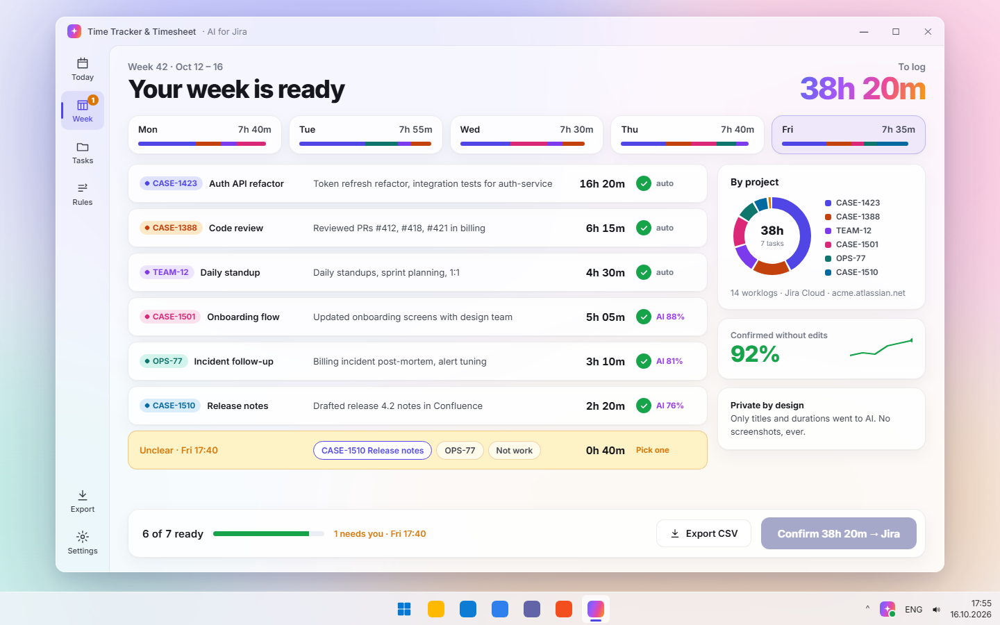
Your week is ready
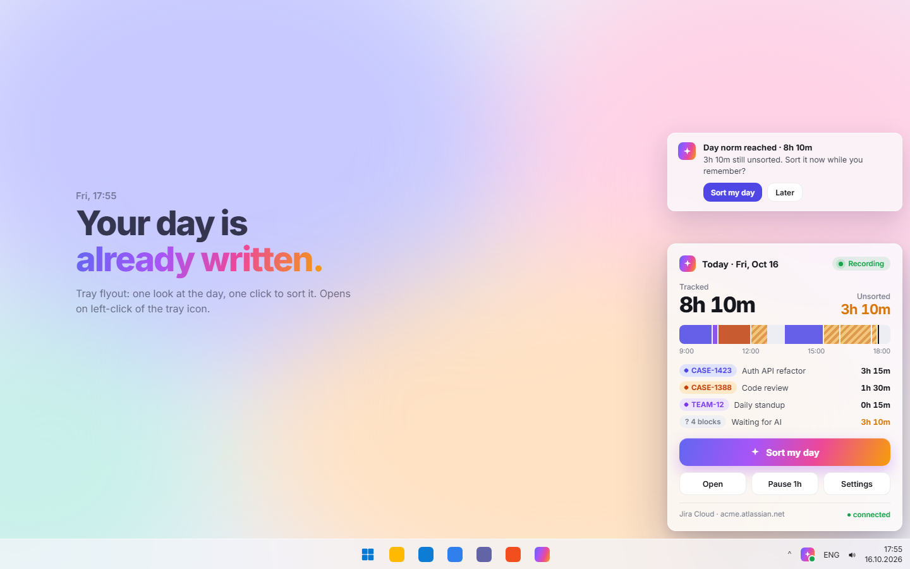
Трей + тост
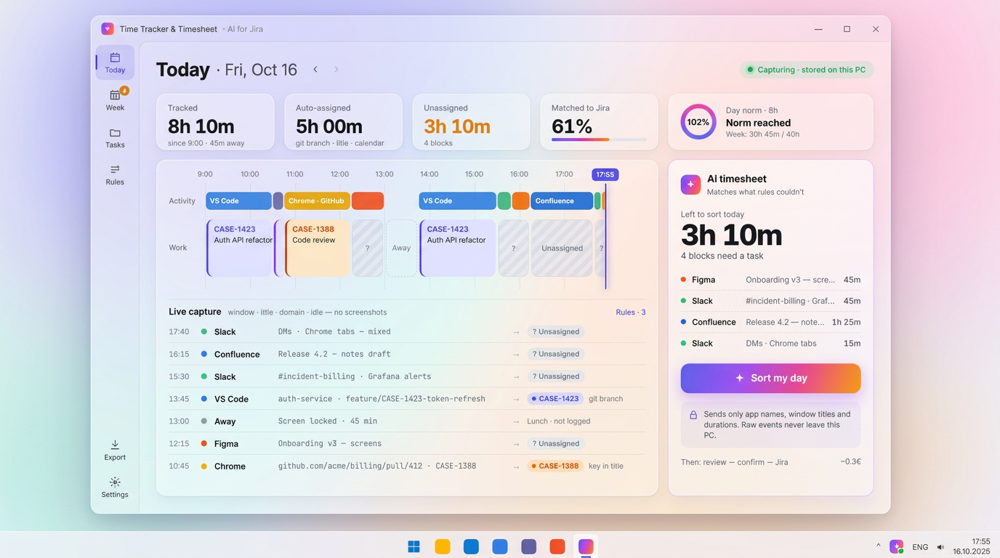
Nano Banana: «Сегодня», доведённый до концепта
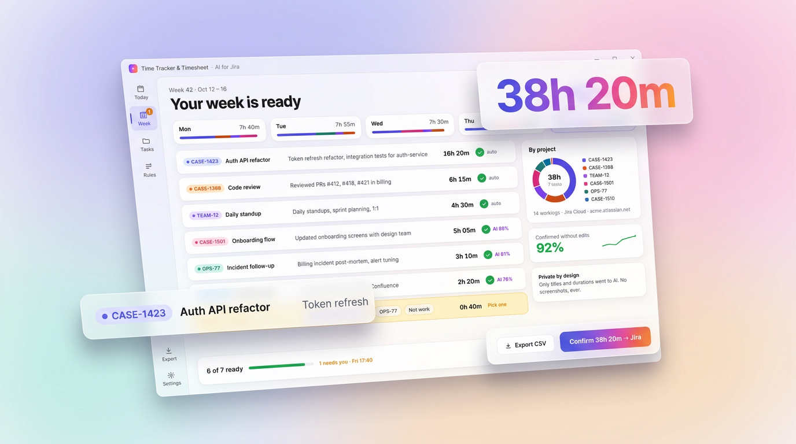
Nano Banana: неделя, презентационный кадр
Плюсы
Продукт выглядит так же, как в ролике и на скриншотах Store: ожидание совпадает с тем, что человек увидит.
Главная AI-кнопка видна сразу, градиент становится узнаваемым знаком бренда.
Весь день на одном экране: цифры, лента и откуда взялось каждое совпадение.
Неделя с галочками и процентами уверенности даёт доверие к AI.
Минусы
Экран плотный: 5 плиток, лента, фид и панель. Новичку больше читать.
Пастельный фон выглядит «не по-виндовому»; тёмную тему придётся рисовать отдельно.
Стекло и градиенты на слабых ПК и в режиме экономии батареи становятся плоскими (Acrylic отключается).
WinUI 3: что нативно, что рисовать M–L
Нативно
MicaAlt/DesktopAcrylic в окне; карточки — Border с полупрозрачной заливкой + ThemeShadow; LinearGradientBrush для кнопки, рамки AI-панели и прогресс-бара; InfoBadge на пункте «Week»; ToggleSwitch/Button в трее.
Свой код
Rail с подписью под иконкой (свой шаблон NavigationView или ListView); лента Activity/Work — развитие текущего DayStrip (Canvas); donut — Path + ArcSegment; градиентный текст «38h 20m» — Composition (CompositionMaskBrush) или Win2D; пастельный фон внутри окна — CompositionRadialGradientBrush поверх Acrylic; штриховка — уже есть HatchFill.
Трей
H.NotifyIcon + своё безрамочное окно-флайаут с DesktopAcrylic у края экрана; тост — AppNotificationBuilder (Windows App SDK).
Только системный язык Windows 11: Mica, Segoe UI Variable, Segoe Fluent Icons, системный акцент #005FB8, скругление 8 px, почти без декора. Слева развёрнутый NavigationView с карточкой «неделя 30h 45m / 40h». «Сегодня»: заголовок дня и CommandBar с одной акцентной кнопкой «Sort with AI», полоса дня с нормой, InfoBar «4 блока не разобраны», две группы: «На задачах» (галочка, ключ, текст ворклога, источник, длительность) и «Не разобрано» (ComboBox «Pick a task…» и «Not work» прямо в строке). Неделя: таблица задача × день, как в Tempo; источник Rule / Calendar / AI %; InfoBar с одним вопросом. Трей: флайаут в стиле Quick Settings и обычное контекстное меню.
Сегодня
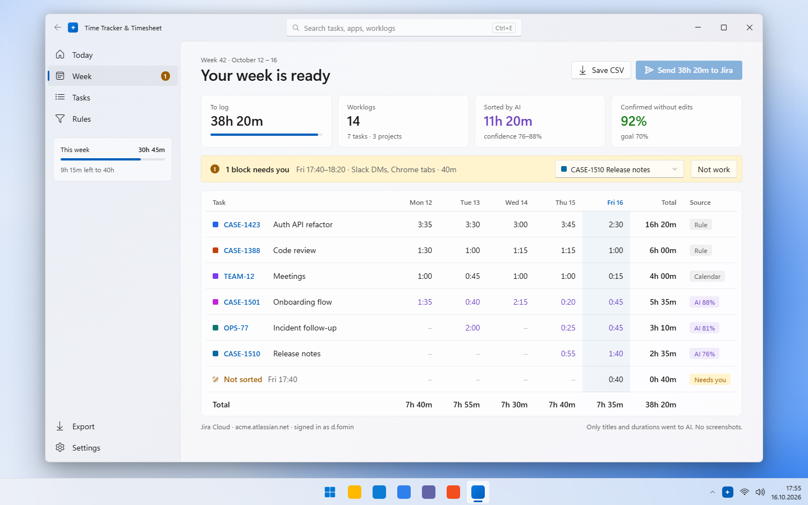
Неделя: табель
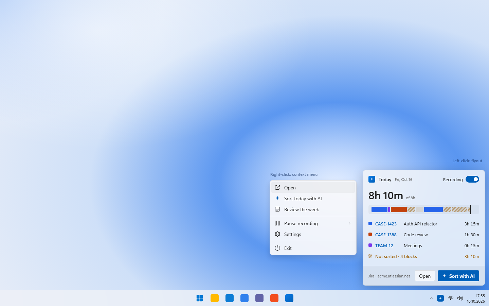
Флайаут + контекстное меню
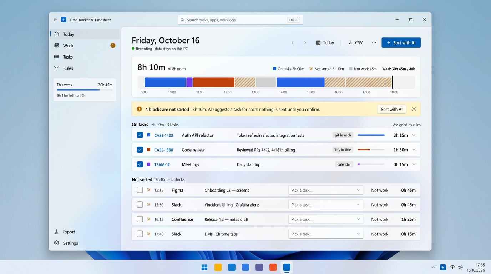
Nano Banana: «Сегодня» на Mica
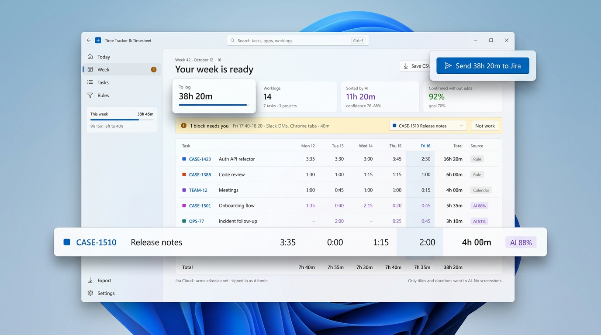
Nano Banana: неделя, презентационный кадр
Плюсы
Самый дешёвый вариант: почти всё на стандартных контролах. Тёмная тема, высокий контраст и экранный диктор работают сами.
Ближе всего к текущему DayView (группы, Mica, DayStrip), переписывать почти нечего.
Табель недели сразу понятен менеджерам и бухгалтерии.
Вызывает доверие у корпоративных пользователей, в Store выглядит родным приложением.
Минусы
Мало вау-эффекта: AI здесь просто синяя кнопка, магии не чувствуется.
Похож на сотню других утилит, отличаться придётся словами, а не видом.
Расходится с роликом и скриншотами Store, их пришлось бы переснять.
WinUI 3: что нативно, что рисовать S–M
Нативно
MicaBackdrop (уже есть), NavigationView Left, CommandBar, InfoBar, ComboBox/AutoSuggestBox, CheckBox, ItemsRepeater/ListView, ProgressBar, MenuFlyout для трея, TitleBar с поиском (WinAppSDK 1.6+ TitleBar), все цвета — ThemeResource (AccentFillColorDefaultBrush, CardBackgroundFillColorDefaultBrush).
Свой код
Только полоса дня (есть DayStrip) и таблица недели (Grid/ItemsRepeater; DataGrid из Toolkit не нужен). Штриховка — существующий HatchFill.
Трей
H.NotifyIcon: контекстное меню нативно; флайаут — маленькое окно с DesktopAcrylic.
Тёмное стекло, тонкие линии, неоновые цвета задач и AI-градиент только там, где решает AI. Главная идея — не экран, а очередь: «Review queue · 4 left». Сверху лента дня (SCREEN / WORK), предложения AI показаны пунктиром. В центре одна карточка: что было на экране, ответ AI с уверенностью, объяснение «почему», черновик ворклога, альтернативы на цифрах 2/3/0, действия Enter / E / S / R. Справа «Accept all ≥ 80%». Неделя: тепловая карта задача × день, огромное «38h 20m», три инсайта, один вопрос прямо в нижней панели, Ctrl+Enter отправляет. Трей: командная палитра вместо меню.
Сегодня: очередь разбора
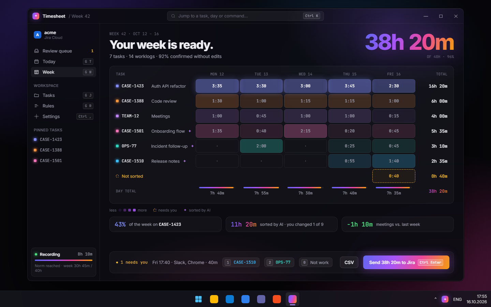
Неделя: тепловая карта
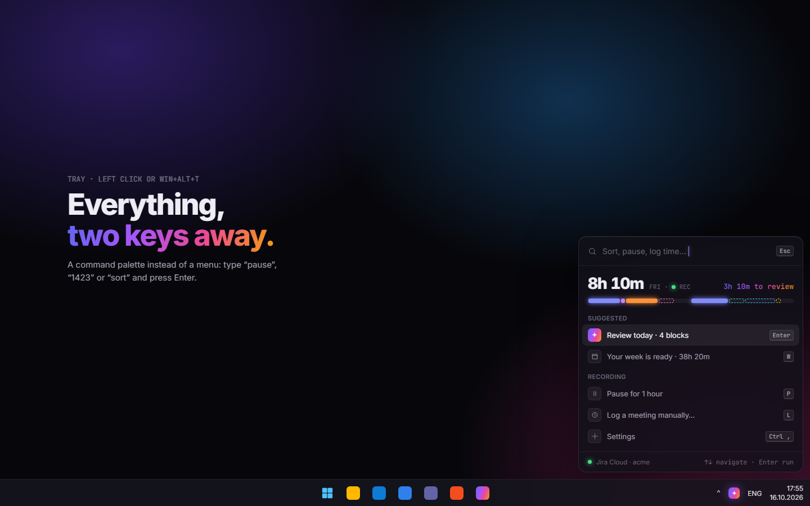
Трей: палитра команд
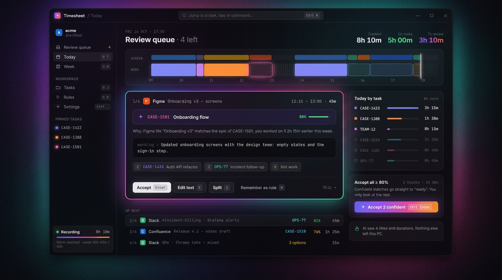
Nano Banana: очередь, доведённая до концепта
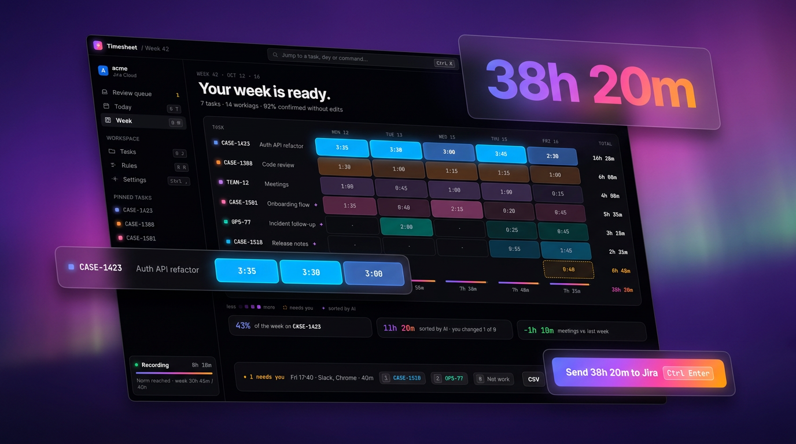
Nano Banana: неделя, презентационный кадр
Плюсы
Самый быстрый разбор: день проверяется за минуту с клавиатуры. Это «Вариант В» из исследования UX.
«Accept all ≥ 80%» и «Remember as rule» прямо работают на метрику «70% без правки».
Видно, почему AI так решил, это даёт доверие.
Очень премиально для разработчиков, а именно они основные пользователи Jira.
Минусы
Задуман тёмным; светлую тему придётся проектировать отдельно.
Неон и свечение могут показаться игрушечными менеджерам и бухгалтерии.
К клавиатурной модели нужно привыкнуть, без подсказок её не найдут.
Больше всего собственных стилей.
WinUI 3: что нативно, что рисовать L
Нативно
RequestedTheme=Dark + MicaAlt/Acrylic; KeyboardAccelerators и KeyTipPlacement для подсказок; AutoSuggestBox для Ctrl+K; градиентная рамка карточки — Border с LinearGradientBrush в BorderBrush; ItemsRepeater + UniformGridLayout для тепловой карты.
Свой код
Свечение (Composition DropShadow с цветом или AttachedCardShadow из CommunityToolkit); стопка «следующих» карточек и анимации перехода (Composition implicit animations); цвета ячеек тепловой карты считаются в коде; моноширинный шрифт и kbd-чипы — свой стиль.
Трей
Палитра — безрамочное окно (OverlappedPresenter без рамки, DesktopAcrylic), глобальная горячая клавиша через RegisterHotKey.
Ультра-простой и тёплый. Бумажный off-white фон, Plus Jakarta Sans, без боковой навигации: переключатель Today / Week и шестерёнка. «Сегодня»: большое кольцо нормы, где цвета — задачи, а точки — неразобранное; одна фраза человеческим языком («Mostly Auth API refactor and Code review. 3h 10m still need a task») и одна чёрная кнопка «Sort my day» с радужным свечением. Детали (полоса дня) в выдвижной шторке снизу. Неделя: пять маленьких колец дней, общая полоса, задачи карточками-предложениями, один вопрос в виде трёх кнопок, одна кнопка «Send 38h 20m to Jira». Трей: то же кольцо и та же кнопка, иконка трея тоже маленькое кольцо.
Сегодня
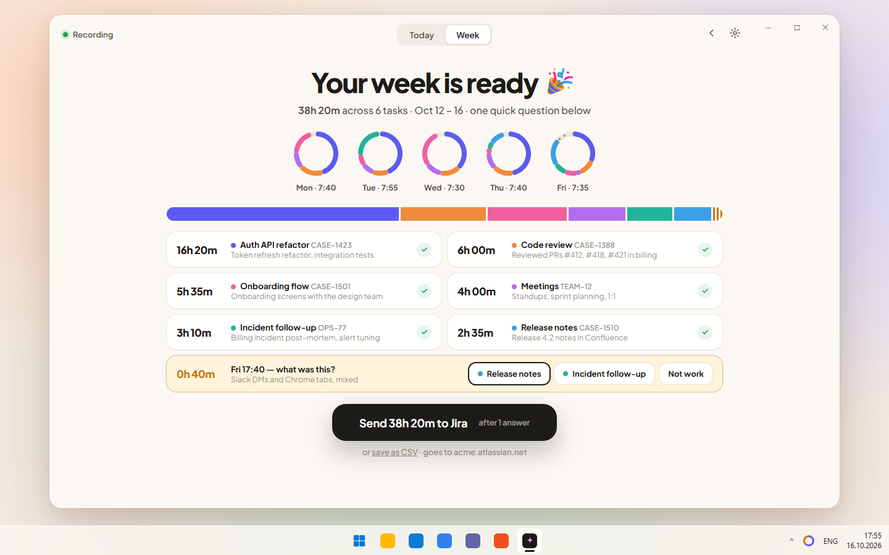
Your week is ready
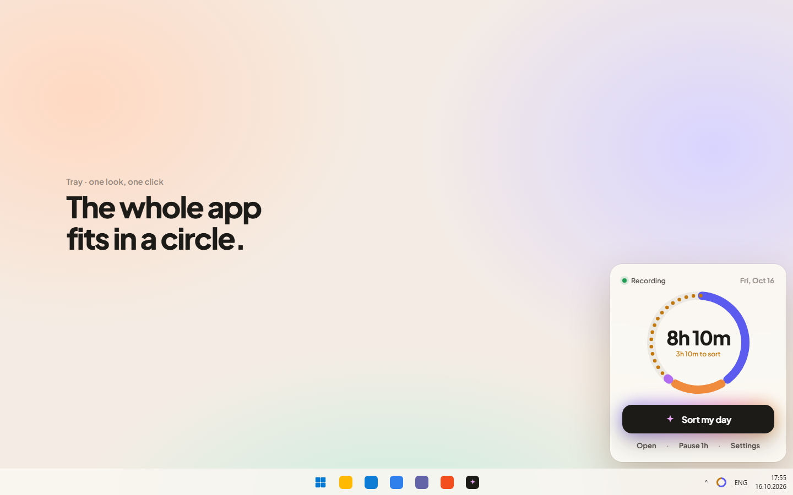
Трей
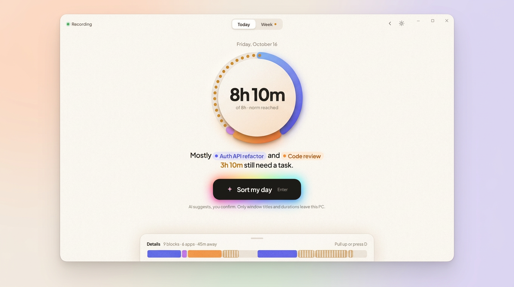
Nano Banana: «Сегодня», доведённый до концепта
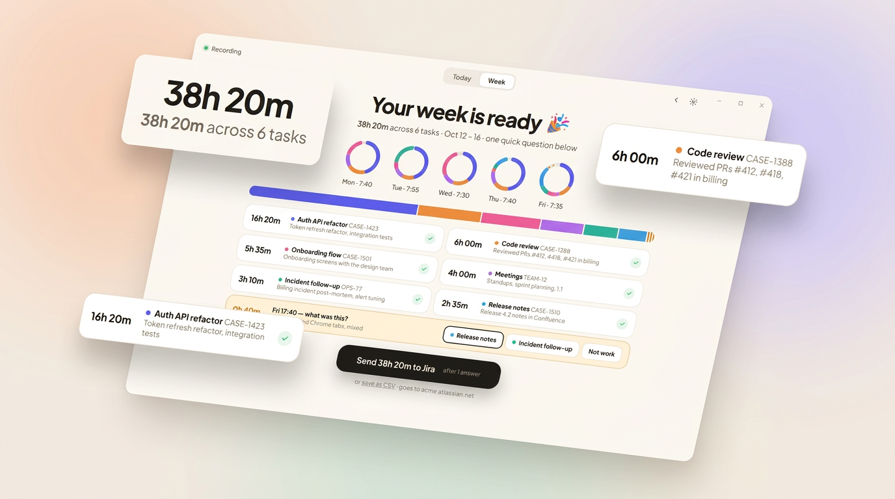
Nano Banana: неделя, презентационный кадр
Плюсы
Самый понятный: одно число, одно кольцо, одна кнопка, учить нечего.
Хорош для первого запуска и для тех, кто не разработчик.
Неделя читается как короткий отчёт, а не таблица.
Одна метафора везде: кольцо в окне, во флайауте и в иконке трея.
Минусы
Детали спрятаны, опытным нужна полоса или таблица (шторка Details это частично решает).
Каждое редкое действие на клик дальше.
Кольцо нормы странно выглядит при неполном дне или неполной занятости.
На скриншотах Store меньше видно, что внутри.
WinUI 3: что нативно, что рисовать M
Нативно
SelectorBar (WinAppSDK 1.5+) для Today/Week; Button со своим стилем; Mica можно оставить под бумажной заливкой; карточки — Border; вопрос недели — RadioButtons/ToggleButton.
Свой код
Кольцо с сегментами и точками — Path/ArcSegment + ItemsControl точек (или Win2D, его пока нет в проекте); радужное свечение под кнопкой — Composition DropShadow или размытый градиент; выдвижная шторка Details — свой контрол с анимацией TranslateTransform; иконка трея с кольцом генерируется в коде (по прогрессу).
Шрифт
Plus Jakarta Sans (OFL) вшить в пакет.
Рекомендация
Взять A за основу: оно совпадает с роликом и будущими скриншотами Store. Из других вариантов добавить:
из C — очередь разбора «по одному» с клавишами 1/2/3/Enter и «Accept all ≥ 80%» как режим после «Sort my day», и строку «почему AI так решил»;
из D — кольцо нормы в трее и иконке трея и одну главную кнопку на экране;
из B — под стеклом использовать нативные контролы (InfoBar, ComboBox, CommandBar), чтобы тёмная тема и доступность работали сами.
Концепты Nano Banana — это настроение, а не спецификация: модель местами искажает мелкий текст (CASS-1388 вместо CASE-1388, «Expert»). Источник правды — HTML-макеты.